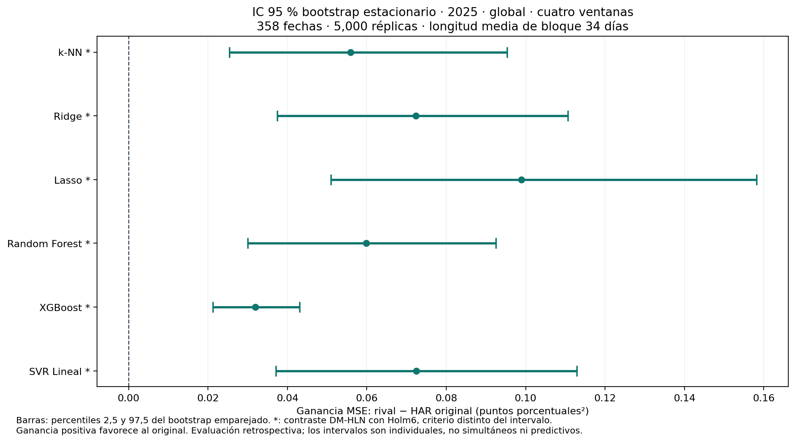
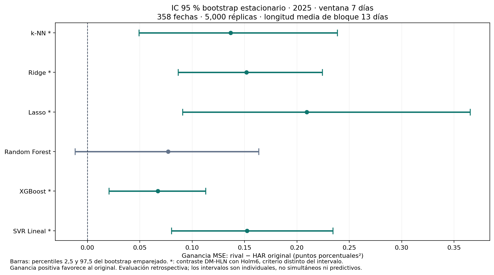
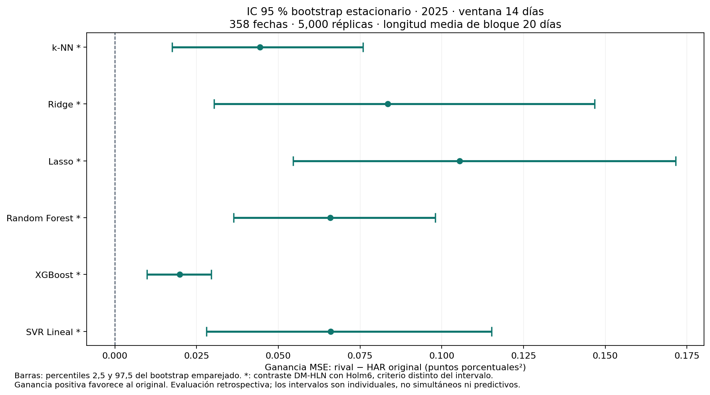
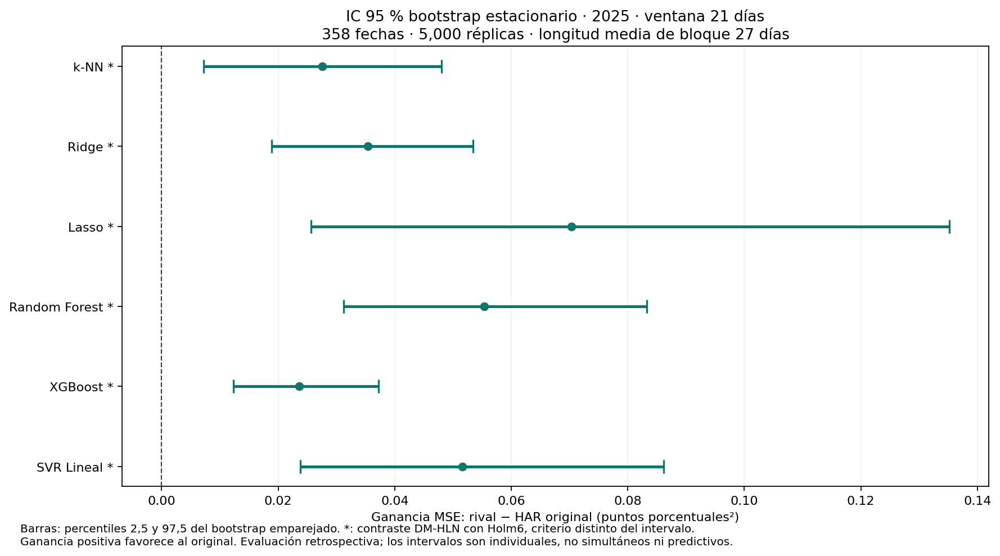
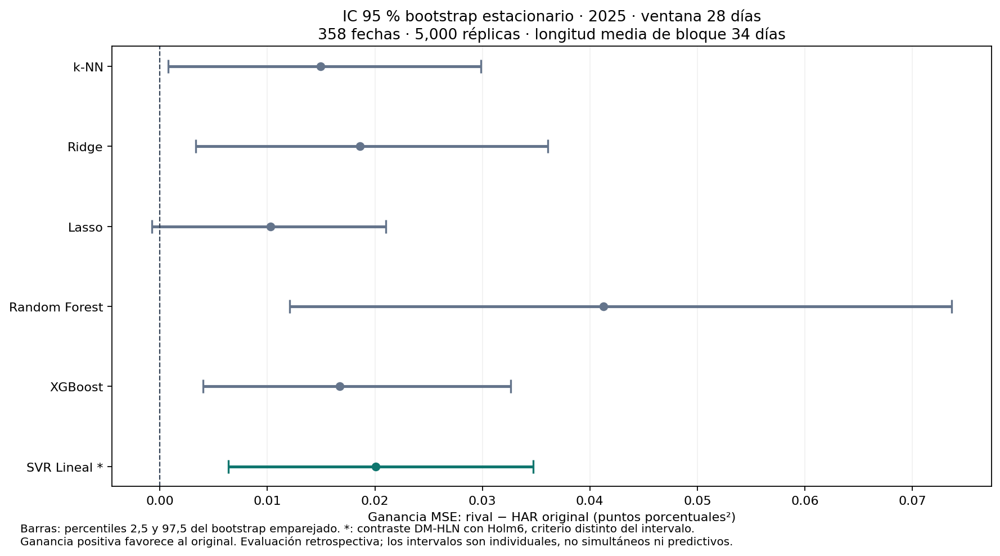
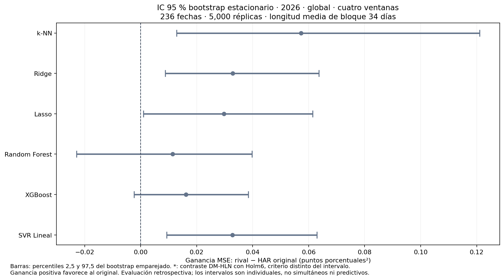
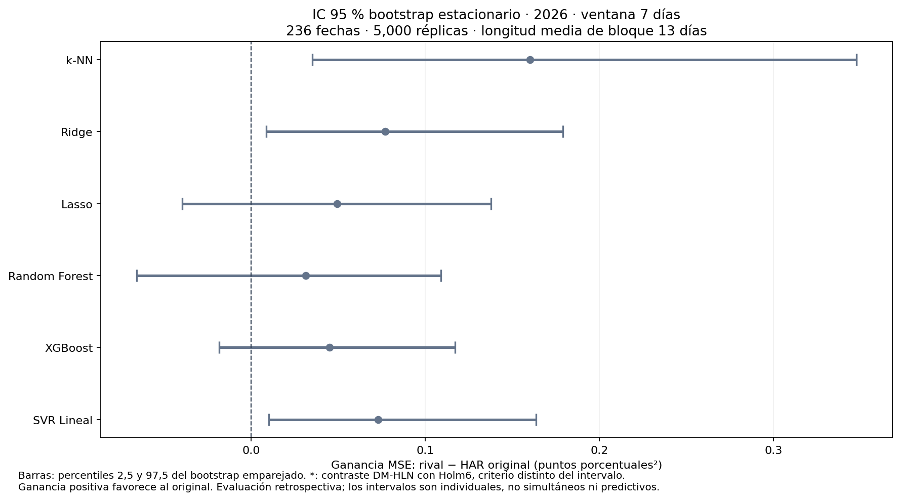
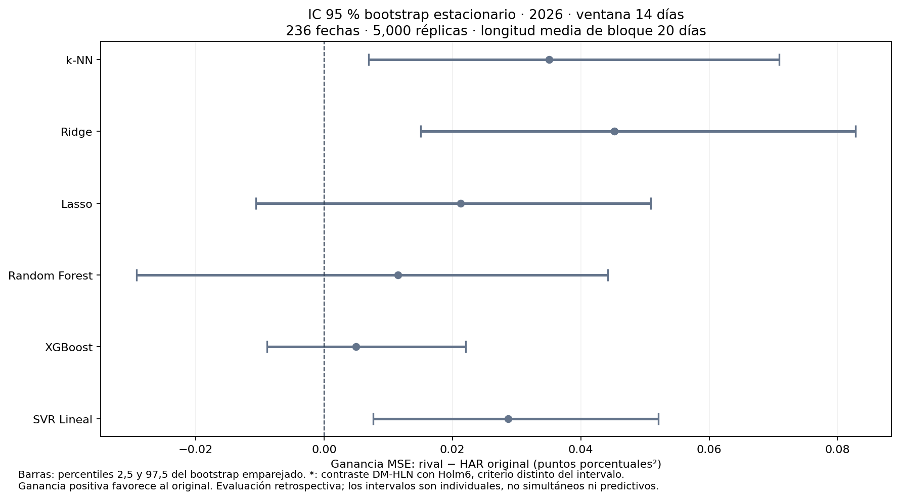
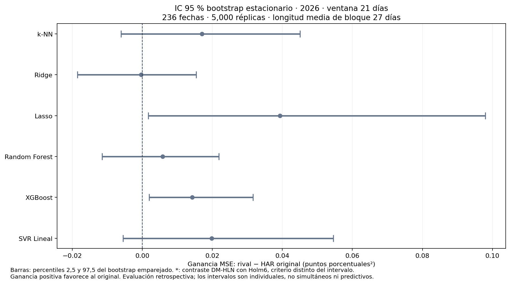
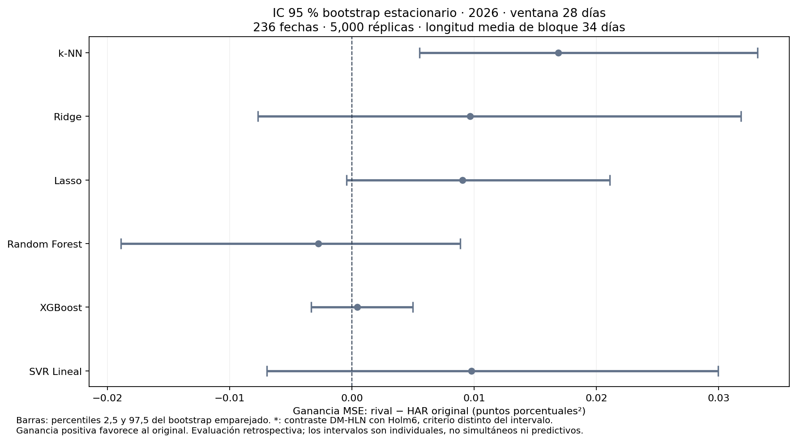

Actualización · intervalos bootstrap. Los intervalos percentiles de bootstrap temporal reemplazan los intervalos normales HAC. Los cambios se identifican en amarillo. Se conservan los modelos y pronósticos originales.
Se estima la ganancia de MSE: pérdida del rival menos pérdida del HAR-Ridge + XGBoost original. Un valor positivo favorece al original. Cada réplica remuestrea bloques de fechas consecutivas y usa las mismas fechas para todos los modelos. Se aplican percentiles 2,5 y 97,5 a las ganancias medias remuestreadas, sin una fórmula normal para el intervalo.
Los intervalos del 95 % son individuales: no tienen ajuste por comparaciones múltiples ni predicen la volatilidad futura. Los asteriscos conservan el contraste DM-HLN con Holm6; ese contraste es distinto de la lectura del intervalo bootstrap.
El bootstrap requiere condiciones de dependencia débil y estacionariedad aproximada. La longitud media de bloque es una regla explícita, no una garantía de capturar toda la dependencia; se muestran alternativas de sensibilidad. Ambos periodos se habían explorado y siguen siendo retrospectivos.
Sensibilidad observada: en 2025, ventana de 7 días, el intervalo de Random Forest incluye cero con bloques medios de 6 y 13 días, pero lo excluye con 26 días. En la vista global de 2026, el intervalo de Lasso incluye cero con 17 días y lo excluye con 34 y 68 días. Estas lecturas dependen de la longitud del bloque: se conserva la regla principal declarada y se muestran todas las alternativas, sin elegir el intervalo más favorable.
5,000 réplicas por vista · semilla 42 · longitud media de bloque: máximo entre ventana + horizonte máximo − 1 y ⌈n¹ᐟ³⌉.
Protocolo y hashes · Todas las comparaciones · Sensibilidad a longitud de bloque · Límites HAC anteriores y bootstrap
Descargar tabla CSV · Figura SVG · Protocolo de esta vista

| Rival | Ganancia MSE | IC bootstrap inferior | IC bootstrap superior | Lectura IC individual | p DM Holm6 | Conclusión DM Holm6 |
|---|---|---|---|---|---|---|
| k-NN | 0.0559245 | 0.0253582 | 0.0952789 | Favorece al original (IC individual) | 0.00355789 | Favorece HAR-Ridge + XGBoost |
| Ridge | 0.0723429 | 0.0373793 | 0.110573 | Favorece al original (IC individual) | 0.000498746 | Favorece HAR-Ridge + XGBoost |
| Lasso | 0.0989005 | 0.0509595 | 0.1582 | Favorece al original (IC individual) | 0.000557777 | Favorece HAR-Ridge + XGBoost |
| Random Forest | 0.0598891 | 0.0300106 | 0.0925362 | Favorece al original (IC individual) | 0.000498746 | Favorece HAR-Ridge + XGBoost |
| XGBoost | 0.0318579 | 0.0212263 | 0.0431028 | Favorece al original (IC individual) | 7.98786e-07 | Favorece HAR-Ridge + XGBoost |
| SVR Lineal | 0.0724911 | 0.0370505 | 0.112895 | Favorece al original (IC individual) | 0.000498746 | Favorece HAR-Ridge + XGBoost |
| model | gain | bootstrap_low | bootstrap_high | hac_normal_low | hac_normal_high |
|---|---|---|---|---|---|
| k-NN | 0.0559245 | 0.0253582 | 0.0952789 | 0.0192495 | 0.0925995 |
| Ridge | 0.0723429 | 0.0373793 | 0.110573 | 0.0365012 | 0.108185 |
| Lasso | 0.0989005 | 0.0509595 | 0.1582 | 0.0470508 | 0.15075 |
| Random Forest | 0.0598891 | 0.0300106 | 0.0925362 | 0.0306056 | 0.0891726 |
| XGBoost | 0.0318579 | 0.0212263 | 0.0431028 | 0.0204686 | 0.0432473 |
| SVR Lineal | 0.0724911 | 0.0370505 | 0.112895 | 0.0365986 | 0.108384 |
Descargar tabla CSV · Figura SVG · Protocolo de esta vista

| Rival | Ganancia MSE | IC bootstrap inferior | IC bootstrap superior | Lectura IC individual | p DM Holm6 | Conclusión DM Holm6 |
|---|---|---|---|---|---|---|
| k-NN | 0.136748 | 0.0490689 | 0.238478 | Favorece al original (IC individual) | 0.0144259 | Favorece HAR-Ridge + XGBoost |
| Ridge | 0.151944 | 0.0865381 | 0.224175 | Favorece al original (IC individual) | 0.000160146 | Favorece HAR-Ridge + XGBoost |
| Lasso | 0.209507 | 0.0909234 | 0.365276 | Favorece al original (IC individual) | 0.00923263 | Favorece HAR-Ridge + XGBoost |
| Random Forest | 0.0771543 | -0.0117738 | 0.163403 | IC incluye cero | 0.150037 | Sin diferencia significativa |
| XGBoost | 0.0673384 | 0.0206835 | 0.11288 | Favorece al original (IC individual) | 0.0357641 | Favorece HAR-Ridge + XGBoost |
| SVR Lineal | 0.152313 | 0.080144 | 0.234377 | Favorece al original (IC individual) | 0.000529422 | Favorece HAR-Ridge + XGBoost |
| model | gain | bootstrap_low | bootstrap_high | hac_normal_low | hac_normal_high |
|---|---|---|---|---|---|
| k-NN | 0.136748 | 0.0490689 | 0.238478 | 0.0440017 | 0.229495 |
| Ridge | 0.151944 | 0.0865381 | 0.224175 | 0.0832331 | 0.220656 |
| Lasso | 0.209507 | 0.0909234 | 0.365276 | 0.0781605 | 0.340853 |
| Random Forest | 0.0771543 | -0.0117738 | 0.163403 | -0.0257735 | 0.180082 |
| XGBoost | 0.0673384 | 0.0206835 | 0.11288 | 0.0128696 | 0.121807 |
| SVR Lineal | 0.152313 | 0.080144 | 0.234377 | 0.0775533 | 0.227074 |
Descargar tabla CSV · Figura SVG · Protocolo de esta vista

| Rival | Ganancia MSE | IC bootstrap inferior | IC bootstrap superior | Lectura IC individual | p DM Holm6 | Conclusión DM Holm6 |
|---|---|---|---|---|---|---|
| k-NN | 0.0444454 | 0.0174983 | 0.0759597 | Favorece al original (IC individual) | 0.0160735 | Favorece HAR-Ridge + XGBoost |
| Ridge | 0.0834523 | 0.0302875 | 0.146797 | Favorece al original (IC individual) | 0.0160735 | Favorece HAR-Ridge + XGBoost |
| Lasso | 0.105513 | 0.0545113 | 0.171608 | Favorece al original (IC individual) | 0.00394985 | Favorece HAR-Ridge + XGBoost |
| Random Forest | 0.0658281 | 0.0362664 | 0.0979993 | Favorece al original (IC individual) | 0.0011951 | Favorece HAR-Ridge + XGBoost |
| XGBoost | 0.0197857 | 0.00986458 | 0.0294512 | Favorece al original (IC individual) | 0.00421183 | Favorece HAR-Ridge + XGBoost |
| SVR Lineal | 0.0660267 | 0.0280401 | 0.115239 | Favorece al original (IC individual) | 0.0160735 | Favorece HAR-Ridge + XGBoost |
| model | gain | bootstrap_low | bootstrap_high | hac_normal_low | hac_normal_high |
|---|---|---|---|---|---|
| k-NN | 0.0444454 | 0.0174983 | 0.0759597 | 0.0116251 | 0.0772656 |
| Ridge | 0.0834523 | 0.0302875 | 0.146797 | 0.0261356 | 0.140769 |
| Lasso | 0.105513 | 0.0545113 | 0.171608 | 0.0455346 | 0.165491 |
| Random Forest | 0.0658281 | 0.0362664 | 0.0979993 | 0.0321288 | 0.0995274 |
| XGBoost | 0.0197857 | 0.00986458 | 0.0294512 | 0.00825859 | 0.0313128 |
| SVR Lineal | 0.0660267 | 0.0280401 | 0.115239 | 0.019067 | 0.112986 |
Descargar tabla CSV · Figura SVG · Protocolo de esta vista

| Rival | Ganancia MSE | IC bootstrap inferior | IC bootstrap superior | Lectura IC individual | p DM Holm6 | Conclusión DM Holm6 |
|---|---|---|---|---|---|---|
| k-NN | 0.0275651 | 0.00719133 | 0.0480437 | Favorece al original (IC individual) | 0.044253 | Favorece HAR-Ridge + XGBoost |
| Ridge | 0.0353534 | 0.0189015 | 0.0534405 | Favorece al original (IC individual) | 0.00116008 | Favorece HAR-Ridge + XGBoost |
| Lasso | 0.0702926 | 0.025598 | 0.13516 | Favorece al original (IC individual) | 0.044253 | Favorece HAR-Ridge + XGBoost |
| Random Forest | 0.055315 | 0.0312388 | 0.0832691 | Favorece al original (IC individual) | 0.000147086 | Favorece HAR-Ridge + XGBoost |
| XGBoost | 0.0235775 | 0.0123091 | 0.0371779 | Favorece al original (IC individual) | 0.00116008 | Favorece HAR-Ridge + XGBoost |
| SVR Lineal | 0.0515567 | 0.0238194 | 0.0861356 | Favorece al original (IC individual) | 0.00876205 | Favorece HAR-Ridge + XGBoost |
| model | gain | bootstrap_low | bootstrap_high | hac_normal_low | hac_normal_high |
|---|---|---|---|---|---|
| k-NN | 0.0275651 | 0.00719133 | 0.0480437 | 0.00342197 | 0.0517083 |
| Ridge | 0.0353534 | 0.0189015 | 0.0534405 | 0.0170609 | 0.0536459 |
| Lasso | 0.0702926 | 0.025598 | 0.13516 | 0.0114344 | 0.129151 |
| Random Forest | 0.055315 | 0.0312388 | 0.0832691 | 0.0304177 | 0.0802124 |
| XGBoost | 0.0235775 | 0.0123091 | 0.0371779 | 0.0112876 | 0.0358674 |
| SVR Lineal | 0.0515567 | 0.0238194 | 0.0861356 | 0.0184481 | 0.0846653 |
Descargar tabla CSV · Figura SVG · Protocolo de esta vista

| Rival | Ganancia MSE | IC bootstrap inferior | IC bootstrap superior | Lectura IC individual | p DM Holm6 | Conclusión DM Holm6 |
|---|---|---|---|---|---|---|
| k-NN | 0.0149393 | 0.000761846 | 0.0298784 | Favorece al original (IC individual) | 0.107432 | Sin diferencia significativa |
| Ridge | 0.0186216 | 0.00332384 | 0.0360648 | Favorece al original (IC individual) | 0.107432 | Sin diferencia significativa |
| Lasso | 0.0102897 | -0.000741798 | 0.0210321 | IC incluye cero | 0.107432 | Sin diferencia significativa |
| Random Forest | 0.041259 | 0.0120586 | 0.073633 | Favorece al original (IC individual) | 0.0532494 | Sin diferencia significativa |
| XGBoost | 0.0167302 | 0.00399287 | 0.0326209 | Favorece al original (IC individual) | 0.107432 | Sin diferencia significativa |
| SVR Lineal | 0.0200674 | 0.00635419 | 0.0347493 | Favorece al original (IC individual) | 0.0402024 | Favorece HAR-Ridge + XGBoost |
| model | gain | bootstrap_low | bootstrap_high | hac_normal_low | hac_normal_high |
|---|---|---|---|---|---|
| k-NN | 0.0149393 | 0.000761846 | 0.0298784 | 0.000713583 | 0.0291649 |
| Ridge | 0.0186216 | 0.00332384 | 0.0360648 | 0.00249975 | 0.0347435 |
| Lasso | 0.0102897 | -0.000741798 | 0.0210321 | -0.00149575 | 0.0220751 |
| Random Forest | 0.041259 | 0.0120586 | 0.073633 | 0.0103349 | 0.0721831 |
| XGBoost | 0.0167302 | 0.00399287 | 0.0326209 | 0.00185968 | 0.0316007 |
| SVR Lineal | 0.0200674 | 0.00635419 | 0.0347493 | 0.00590801 | 0.0342268 |
Descargar tabla CSV · Figura SVG · Protocolo de esta vista

| Rival | Ganancia MSE | IC bootstrap inferior | IC bootstrap superior | Lectura IC individual | p DM Holm6 | Conclusión DM Holm6 |
|---|---|---|---|---|---|---|
| k-NN | 0.0572335 | 0.01281 | 0.121022 | Favorece al original (IC individual) | 0.31953 | Sin diferencia significativa |
| Ridge | 0.0328531 | 0.0087842 | 0.0636686 | Favorece al original (IC individual) | 0.261295 | Sin diferencia significativa |
| Lasso | 0.029762 | 0.000980855 | 0.0614105 | Favorece al original (IC individual) | 0.31953 | Sin diferencia significativa |
| Random Forest | 0.0114591 | -0.0228858 | 0.0398007 | IC incluye cero | 0.541949 | Sin diferencia significativa |
| XGBoost | 0.0161317 | -0.00229999 | 0.0384784 | IC incluye cero | 0.325427 | Sin diferencia significativa |
| SVR Lineal | 0.0327685 | 0.00932893 | 0.0629105 | Favorece al original (IC individual) | 0.261295 | Sin diferencia significativa |
| model | gain | bootstrap_low | bootstrap_high | hac_normal_low | hac_normal_high |
|---|---|---|---|---|---|
| k-NN | 0.0572335 | 0.01281 | 0.121022 | -0.00478303 | 0.11925 |
| Ridge | 0.0328531 | 0.0087842 | 0.0636686 | 0.00199739 | 0.0637089 |
| Lasso | 0.029762 | 0.000980855 | 0.0614105 | -0.0048843 | 0.0644082 |
| Random Forest | 0.0114591 | -0.0228858 | 0.0398007 | -0.0243009 | 0.0472191 |
| XGBoost | 0.0161317 | -0.00229999 | 0.0384784 | -0.00582398 | 0.0380874 |
| SVR Lineal | 0.0327685 | 0.00932893 | 0.0629105 | 0.00183009 | 0.0637069 |
Descargar tabla CSV · Figura SVG · Protocolo de esta vista

| Rival | Ganancia MSE | IC bootstrap inferior | IC bootstrap superior | Lectura IC individual | p DM Holm6 | Conclusión DM Holm6 |
|---|---|---|---|---|---|---|
| k-NN | 0.159966 | 0.0350723 | 0.347414 | Favorece al original (IC individual) | 0.289912 | Sin diferencia significativa |
| Ridge | 0.0768484 | 0.00859617 | 0.179014 | Favorece al original (IC individual) | 0.496502 | Sin diferencia significativa |
| Lasso | 0.0494106 | -0.0396243 | 0.137635 | IC incluye cero | 0.795347 | Sin diferencia significativa |
| Random Forest | 0.0312316 | -0.065734 | 0.108802 | IC incluye cero | 0.795347 | Sin diferencia significativa |
| XGBoost | 0.0449172 | -0.0183906 | 0.117162 | IC incluye cero | 0.795347 | Sin diferencia significativa |
| SVR Lineal | 0.0727658 | 0.0100616 | 0.163643 | Favorece al original (IC individual) | 0.496502 | Sin diferencia significativa |
| model | gain | bootstrap_low | bootstrap_high | hac_normal_low | hac_normal_high |
|---|---|---|---|---|---|
| k-NN | 0.159966 | 0.0350723 | 0.347414 | 0.00636033 | 0.313572 |
| Ridge | 0.0768484 | 0.00859617 | 0.179014 | -0.0172497 | 0.170946 |
| Lasso | 0.0494106 | -0.0396243 | 0.137635 | -0.0516726 | 0.150494 |
| Random Forest | 0.0312316 | -0.065734 | 0.108802 | -0.0714717 | 0.133935 |
| XGBoost | 0.0449172 | -0.0183906 | 0.117162 | -0.0317235 | 0.121558 |
| SVR Lineal | 0.0727658 | 0.0100616 | 0.163643 | -0.011045 | 0.156577 |
Descargar tabla CSV · Figura SVG · Protocolo de esta vista

| Rival | Ganancia MSE | IC bootstrap inferior | IC bootstrap superior | Lectura IC individual | p DM Holm6 | Conclusión DM Holm6 |
|---|---|---|---|---|---|---|
| k-NN | 0.0350606 | 0.00696448 | 0.0709229 | Favorece al original (IC individual) | 0.171843 | Sin diferencia significativa |
| Ridge | 0.0452073 | 0.0150954 | 0.0827727 | Favorece al original (IC individual) | 0.0833338 | Sin diferencia significativa |
| Lasso | 0.0212842 | -0.0106005 | 0.0509011 | IC incluye cero | 0.686183 | Sin diferencia significativa |
| Random Forest | 0.0115221 | -0.0292065 | 0.0442265 | IC incluye cero | 1 | Sin diferencia significativa |
| XGBoost | 0.00493505 | -0.00888174 | 0.0220367 | IC incluye cero | 1 | Sin diferencia significativa |
| SVR Lineal | 0.0286793 | 0.00766402 | 0.0521192 | Favorece al original (IC individual) | 0.118293 | Sin diferencia significativa |
| model | gain | bootstrap_low | bootstrap_high | hac_normal_low | hac_normal_high |
|---|---|---|---|---|---|
| k-NN | 0.0350606 | 0.00696448 | 0.0709229 | 0.00222493 | 0.0678962 |
| Ridge | 0.0452073 | 0.0150954 | 0.0827727 | 0.0104456 | 0.0799689 |
| Lasso | 0.0212842 | -0.0106005 | 0.0509011 | -0.0123317 | 0.0549001 |
| Random Forest | 0.0115221 | -0.0292065 | 0.0442265 | -0.0302829 | 0.0533272 |
| XGBoost | 0.00493505 | -0.00888174 | 0.0220367 | -0.0127286 | 0.0225987 |
| SVR Lineal | 0.0286793 | 0.00766402 | 0.0521192 | 0.00467788 | 0.0526807 |
Descargar tabla CSV · Figura SVG · Protocolo de esta vista

| Rival | Ganancia MSE | IC bootstrap inferior | IC bootstrap superior | Lectura IC individual | p DM Holm6 | Conclusión DM Holm6 |
|---|---|---|---|---|---|---|
| k-NN | 0.0170307 | -0.0060789 | 0.0450243 | IC incluye cero | 0.990757 | Sin diferencia significativa |
| Ridge | -0.000325475 | -0.0184975 | 0.015422 | IC incluye cero | 1 | Sin diferencia significativa |
| Lasso | 0.039289 | 0.00172412 | 0.0979444 | Favorece al original (IC individual) | 0.874848 | Sin diferencia significativa |
| Random Forest | 0.00583776 | -0.0114641 | 0.0218613 | IC incluye cero | 1 | Sin diferencia significativa |
| XGBoost | 0.0142414 | 0.00195915 | 0.0316369 | Favorece al original (IC individual) | 0.551985 | Sin diferencia significativa |
| SVR Lineal | 0.0198286 | -0.00549864 | 0.0545572 | IC incluye cero | 0.990757 | Sin diferencia significativa |
| model | gain | bootstrap_low | bootstrap_high | hac_normal_low | hac_normal_high |
|---|---|---|---|---|---|
| k-NN | 0.0170307 | -0.0060789 | 0.0450243 | -0.0109797 | 0.045041 |
| Ridge | -0.000325475 | -0.0184975 | 0.015422 | -0.019437 | 0.018786 |
| Lasso | 0.039289 | 0.00172412 | 0.0979444 | -0.0157518 | 0.0943297 |
| Random Forest | 0.00583776 | -0.0114641 | 0.0218613 | -0.0143311 | 0.0260066 |
| XGBoost | 0.0142414 | 0.00195915 | 0.0316369 | -0.00180232 | 0.0302851 |
| SVR Lineal | 0.0198286 | -0.00549864 | 0.0545572 | -0.0155438 | 0.0552009 |
Descargar tabla CSV · Figura SVG · Protocolo de esta vista

| Rival | Ganancia MSE | IC bootstrap inferior | IC bootstrap superior | Lectura IC individual | p DM Holm6 | Conclusión DM Holm6 |
|---|---|---|---|---|---|---|
| k-NN | 0.0168766 | 0.00555185 | 0.0331783 | Favorece al original (IC individual) | 0.242018 | Sin diferencia significativa |
| Ridge | 0.00968243 | -0.007679 | 0.0318444 | IC incluye cero | 1 | Sin diferencia significativa |
| Lasso | 0.00906412 | -0.000432369 | 0.0211081 | IC incluye cero | 0.807386 | Sin diferencia significativa |
| Random Forest | -0.00275514 | -0.0188942 | 0.00885542 | IC incluye cero | 1 | Sin diferencia significativa |
| XGBoost | 0.000433248 | -0.00334196 | 0.00499908 | IC incluye cero | 1 | Sin diferencia significativa |
| SVR Lineal | 0.0098003 | -0.00696738 | 0.0299646 | IC incluye cero | 1 | Sin diferencia significativa |
| model | gain | bootstrap_low | bootstrap_high | hac_normal_low | hac_normal_high |
|---|---|---|---|---|---|
| k-NN | 0.0168766 | 0.00555185 | 0.0331783 | 0.0012747 | 0.0324785 |
| Ridge | 0.00968243 | -0.007679 | 0.0318444 | -0.0135135 | 0.0328784 |
| Lasso | 0.00906412 | -0.000432369 | 0.0211081 | -0.00323596 | 0.0213642 |
| Random Forest | -0.00275514 | -0.0188942 | 0.00885542 | -0.0184357 | 0.0129254 |
| XGBoost | 0.000433248 | -0.00334196 | 0.00499908 | -0.00410696 | 0.00497345 |
| SVR Lineal | 0.0098003 | -0.00696738 | 0.0299646 | -0.0118401 | 0.0314407 |